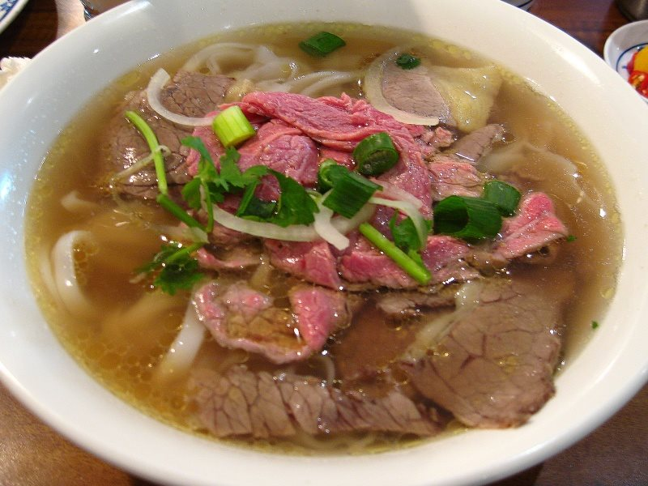

越南河粉

- 名稱：
- 越南河粉，越南名為Phở bò。
- 歷史：
- 越南河粉最早紀錄於 1920 年河內東南方的南定省。有人說當時廚師為了滿足當地人及法國居民的需求，而發明牛肉河粉；也有人說其來自南定省一個貧困的村落文居（Van Cu），當時大家為了生存，便做了牛肉河粉沿街叫賣。雖然確切起源並不可考，不過一般認為越南河粉與中式及法式料理有關。
- 製作方式：
- 以牛骨加入各式香料慢火熬燉8個小時以上的牛肉清湯，淋入碗中將新鮮薄透的生牛肉片燙熟。配上口感Q彈的米粉，佐以香菜、蔥、九層塔、豆芽、青檸檬等新鮮香料製成。不過越南河粉是一道很家常的料理，幾乎家家戶戶都有自己獨門的做法和配料。
- 相關店家：